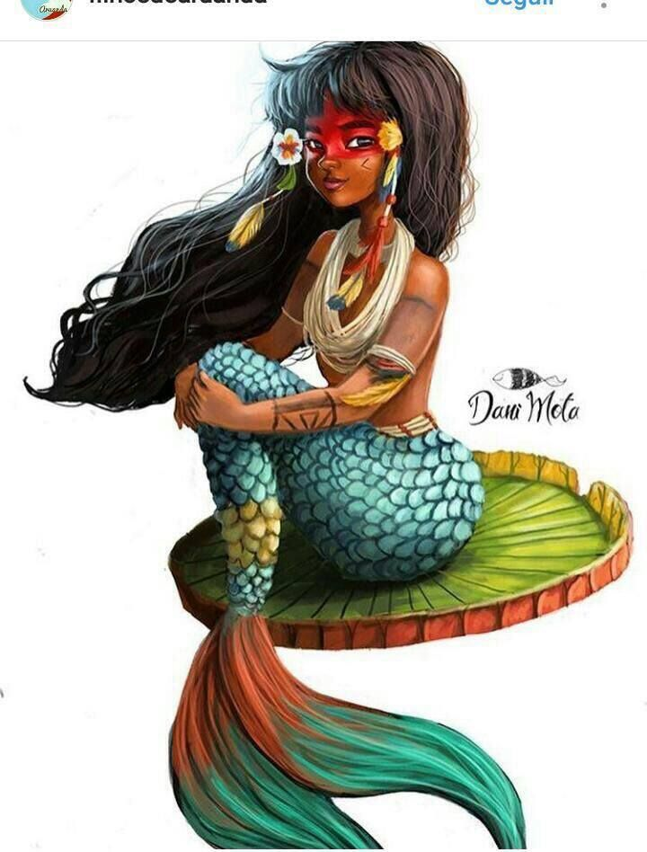
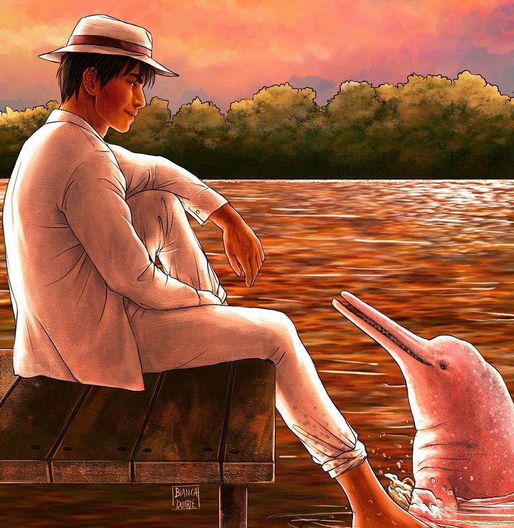

The story of Boitatá has undergone many modifications over time and, therefore, has several versions. In one version of the story, a large snake lived asleep in a huge trunk and when it woke up, hungry, it decided to eat the animals' eyes, but more and more, it emitted a large and intense light, becoming a fire snake. By protecting the forest, it scared people who went into the woods at night.
In the north and northeast of Brazil, the immense fire snake lives in rivers, and comes out when there are invaders in the forests to burn them. According to some northeasterners, the boitatá, known as "Alma dos Compadres e das Comadres", represents the evil spirits who pass by burning everything. In the south of the country, the version that prevailed comes from the biblical story of the Flood. Many animals died there, and the snakes that survived were punished by fire.
The story say that Iara was a courageous warrior with enviable beauty. For this reason, the brothers were jealous of her and decided to kill her. However, at the time of combat, due to the fact that she has warrior skills, Iara manages to reverse the situation and ends up killing her brothers.
Faced with this, very afraid of punishment from her father, the tribe's shaman, Iara decides to run away, but her father manages to find her. As punishment for the death of his brothers, he decides to throw her into the river, but the fish in the river decide to save the beautiful young woman by transforming her into the mermaid Iara. Since then, Iara has inhabited the Amazon rivers, conquering men and then taking them to the bottom of the river, where they drown. It is believed that if a man manages to escape Iara's charms he will go crazy, in a state of torpor and only a shaman can cure him.
One day, a friendly man approached a group of tourists visiting the Amazon. One of the tourists was wearing white clothes and a hat and, approaching, the man told him that he shouldn't dress that way so as not to be confused with the Boto-Cor-de-Rosa.
The tourists were curious when the man talked about the boto and, realizing their curiosity, the man told them that the boto had a reputation as a conqueror and that on June festival nights, the boto transformed into an elegant man, who wore a hat to hide the little hole in his head. He always won over a girl and after getting her pregnant, he disappeared and never saw her again.
After telling the story, the man said goodbye to the group and the tourist wearing the hat decided to change his clothes so as not to be confused with the dolphin. When he noticed that the tourists were already far away from him, taking off his hat, which hid a small hole in his head, the man said "Now, I can take off my hat." After all, the nice man was the Boto-Cor-de-Rosa.